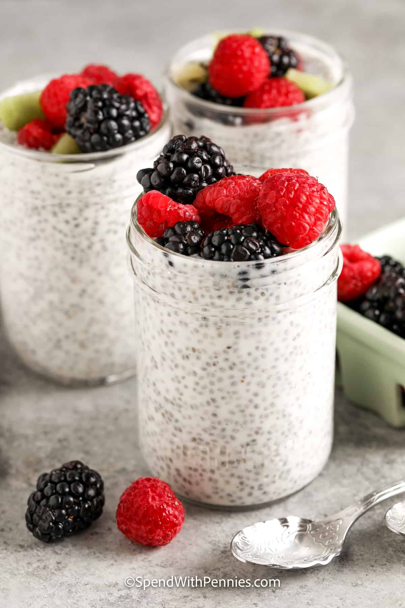

Chia Seed Pudding

Description
Chia seed pudding is a delicious and nutritous meal often eaten as breakfast or a snack. One of the great things about chia seed pudding is that, because it has an unobstrusive taste, you can include a wide variety of toppings depending on your preferences.
Ingredients
- 1 cup chia seeds
- 4 cups plant milk of choice
- toppings of choice
Steps
- Add plant milk and chia seeds to bowl
- Whisk well until plant milk and chia seeds are fully incorporated.
- Wait several hours, then whisk pudding well again.
- Wait several more hours, then scoop and serve with your favorite toppings.